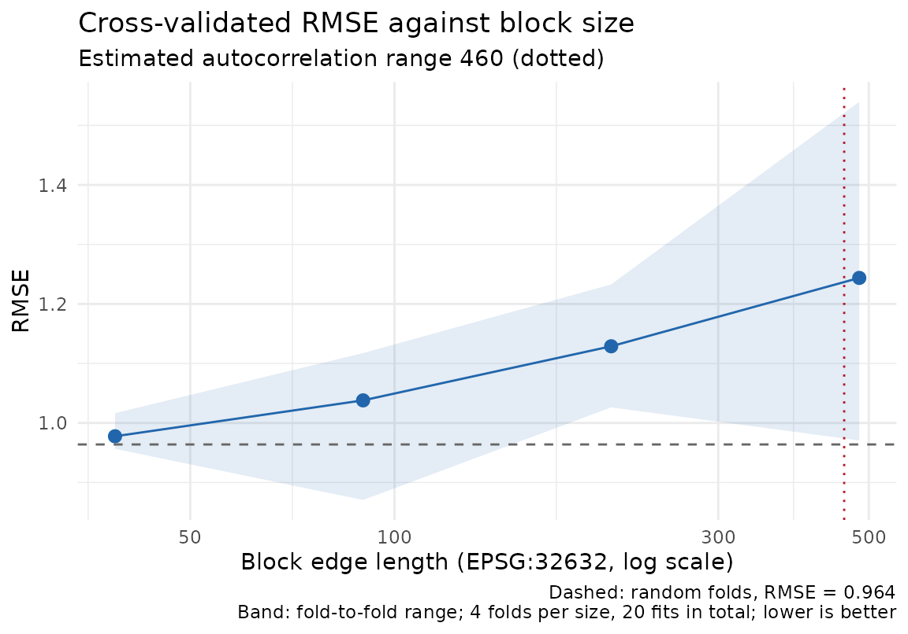

Runs cv_spatial() once per block size on a ladder of sizes, and by
default once with random folds as the reference, whose held-out points keep
most of their neighbours in the training data. It returns the pooled
metric and its fold-to-fold spread at each size, with the estimated
autocorrelation range alongside. The wider the blocks, the farther the
held-out points sit from their training data. The rise of the curve with
block size measures the error at that distance from the data: how much
worse the model predicts a location the farther it lies from the
observations. It is the error of a map only at locations that far from
the data, so the curve does not by itself say which size to report. The
size to read is the one whose held-out distances match those of the
locations the model will predict at: fold_separation() with
prediction_points reads the folds of each size (the $folds of each
element of attr(x, "results")) against them.
Usage
cv_block_size_sweep(
data_sf,
response_var,
predictor_vars,
fit_fn,
block_sizes = NULL,
n_sizes = 6L,
k = 5L,
metric = "RMSE",
include_random = TRUE,
max_fits = 60L,
sac = NULL,
seed = 123L,
quiet = FALSE,
...
)
# S3 method for class 'block_size_sweep'
plot(x, ...)Arguments
- data_sf
An sf layer with the response and the predictors.
- response_var
Name of the response column.
- predictor_vars
Character vector of predictor column names.
- fit_fn
A
function(train_sf)returning aspatial_fit, as forcv_spatial(); see the example for wrapping a built-in backend.- block_sizes
Optional numeric vector of block edge lengths to sweep, in the units of the CRS the folds are built in (plain numbers; a
unitsobject is refused). DefaultNULL: the ladder described in the section "The ladder". A size at which the grid would hold fewer thankblocks is not run, with a warning naming it and the largest size that still giveskblocks; if no size is left, the call is an error.- n_sizes
Number of sizes in the default ladder. Default 6.
- k
Folds per cross-validation. Default 5.
- metric
Which column of
overallto read. Default"RMSE".- include_random
Also cross-validate with random folds, as the reference: the error of predicting among the samples, where each held-out point keeps most of its neighbours in the training data. Default
TRUE.- max_fits
The most model fits the sweep may run, the random reference included; a sweep that needs more refuses to start. Default 60. See the section "The fit budget".
- sac
Optional
sac_rangefromestimate_sac_range()to mark on the curve, or a single number in the units of the CRS the folds are built in. Anestimate_sac_range()result records the CRS it was fitted in; when that is not the sweep's, the range is converted to the sweep's units, with a warning. DefaultNULL: estimated here from the response, detrended onpredictor_vars, when gstat is installed.- seed
Seed for the folds at every size, for each
cv_spatial()run (which draws one seed per fold forfit_fn, so a learner that draws random numbers gives the same curve on every run), and for the range estimate whensacisNULL. Default 123.- quiet
Suppress the progress messages. Default
FALSE.- ...
For
cv_block_size_sweep(), passed tocv_spatial()at every size (predict_args,p,parallel,metrics, ...);block_size,folds,k,seedandauto_rangeare set here and cannot be passed. Ignored byplot().- x
A
block_size_sweep, forplot().
Value
A data.frame of class "block_size_sweep" with one row per
cross-validation: block_size (NA for the random reference),
method, blocks_used, k (the folds built), n_folds_succeeded,
value (the pooled metric), fold_min, fold_max and fold_sd (its
spread across folds), and block_width and block_height (the width and
height of the grid cells built at that size, NA for the random
reference). Attributes: metric, sac_range (the effective range, or
NA), crs, k (the folds requested, which print() and plot()
report), n_fits (the fits planned, which the max_fits check reads;
print() and plot() count the fits made from the k column),
response_var, and results, the full cv_spatial() result at every
size.
plot() returns a ggplot object (see the section "The plot").
The fit budget
Each block size is a full cross-validation, so the cost is
length(block_sizes) * k fits, plus k for the random reference.
max_fits caps that (default 60: room for up to eleven sizes at k = 5
plus the reference; the default six-size ladder at k = 5 needs at most
35). A sweep that would run past the cap refuses to start, naming the
number of fits it would have needed; lower n_sizes or k to cut it
(with block_sizes supplied: pass fewer block_sizes or a smaller k),
or pass include_random = FALSE when the count includes the reference.
The random forest of the example takes seconds; a Bayesian fit_fn takes
minutes per fit, so raise max_fits with that in mind.
The ladder
When block_sizes is NULL, n_sizes values are log-spaced from a
twenty-fifth of the shorter side of the data's extent (of the longer side
when the points lie on one line parallel to an axis) to the largest size,
at most half that side, at which the grid still holds k blocks. Half
the side gives a grid two blocks across, enough for k up to 4 and, for
larger k, on an extent long enough in the other direction; on a roughly
square extent at the default k = 5 the top is about a third of the side.
Any size at which the grid would hold more than the 1,000,000 blocks
make_folds() will build is dropped; when that drops every size, the
sweep refuses and names the largest size whose grid holds k blocks, to
pass as block_sizes. The count is of grid cells: on clustered data a
grid of k or more cells can have fewer than k that hold points, and
make_folds() then lowers k at that size, which the k column shows;
the sweep warns once, naming the sizes. On an extent much longer than it
is wide every rung can fall below the autocorrelation range while longer
blocks would still fit k times along the longer side; the sweep warns
when that happens, and block_sizes is then the way to reach past the
range.
Sizes are in the units of the CRS the folds are built in (the
params$crs of make_folds(), metres for lon/lat input), and the
returned table records that CRS. Each is the minimum block edge handed to
make_folds(), which fits a whole number of cells across each axis of the
extent, so on an axis at least as long as the size the cells are somewhat
longer than it (up to just under twice as long). An axis shorter than the
size is spanned by one row or column of cells, which are then shorter than
the size there. The block_width and block_height columns give the
cells built at each size.
Warnings raised once for the sweep
Every size is a cv_spatial() on the same layer. The warnings
prep_model_data() raises about that layer (class
spatialkit_rows_dropped, counting the incomplete rows dropped, and
spatialkit_constant_predictor) are raised once, not once per size. With
a GWR learner, the two warnings in which predict() counts held-out
locations ("spatialkit_gwr_not_estimable" and
"spatialkit_gwr_extrapolation") are raised once each, under this
function's name, with the totals over every size; the same rows are
predicted at every size, so a location can be counted once per size (see
predict.gwr_fit()).
The plot
plot() draws the curve as a ggplot2 object: the pooled metric at
each block size asked for, the fold-to-fold range as a band, the
random-fold reference as a dashed line, and the estimated autocorrelation
range as a dotted vertical line. The curve rises as the blocks widen
because the held-out points sit farther from their training data: its
height at a size is the error at that distance from the data, and the
error of a map only where the locations it predicts at sit that far from
the observations. The caption says which way is better: higher for R2
and Adj_R2, closer to the nominal level for a coverage_* column (0.975
for coverage_97.5), since over-coverage is miscalibration too, and lower
for everything else. print() shows the same results as a table.
See also
fold_separation() to read the folds of each size against the
locations a map will predict at, and make_folds() for the blocks.
Other folds:
fold_separation(),
make_folds(),
plot_folds()
Examples
library(sf)
set.seed(1)
n <- 200
x <- 5e5 + runif(n, 0, 1000); y <- 5e6 + runif(n, 0, 1000)
d <- as.matrix(dist(cbind(x, y)))
field <- as.numeric(t(chol(exp(-d / 100) + diag(1e-6, n))) %*% rnorm(n))
dat <- st_as_sf(data.frame(x = x, y = y, a = rnorm(n)), coords = c("x", "y"),
crs = 32632)
dat$z <- field + 0.5 * dat$a + rnorm(n, 0, 0.2)
rf_fn <- function(train_sf)
fit_rf_model(train_sf, "z", "a", include_coords = TRUE, num_trees = 100,
seed = 1)
sw <- cv_block_size_sweep(dat, "z", "a", fit_fn = rf_fn, k = 4, n_sizes = 4,
quiet = TRUE)
sw # the curve as a table, with the random-fold reference
#> Cross-validation RMSE against block size (20 fits, k = 4, sizes in EPSG:32632)
#> estimated autocorrelation range: 460
#> block_size blocks_used k folds_ok value fold_min fold_max
#> random NA 4 4 0.9639 0.8346 1.146
#> 38.73 174 4 4 0.9776 0.9566 1.016
#> 89.89 87 4 4 1.0380 0.8706 1.117
#> 208.60 16 4 4 1.1289 1.0262 1.233
#> 484.10 4 4 4 1.2438 0.9707 1.540
# Dashed: the random-fold reference. Dotted: the estimated
# autocorrelation range.
if (requireNamespace("ggplot2", quietly = TRUE)) plot(sw)
